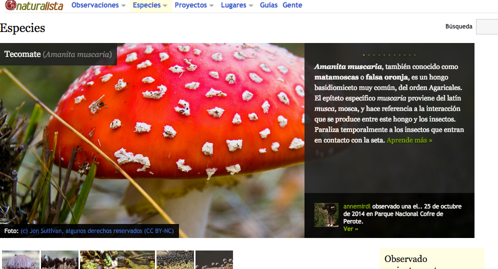

La
semana anterior hab�amos presentado un marco propio como lente para
explorar la potencialidad de los recursos TIC digitales en la educaci�n
en general.
 En ese marco, aparec�a como primer dimensi�n la de “las TIC como recursos para enriquecer el curr�culo a trav�s del v�nculo con el mundo real.”
En ese marco, aparec�a como primer dimensi�n la de “las TIC como recursos para enriquecer el curr�culo a trav�s del v�nculo con el mundo real.”
En esta Semana 2 de nuestro curso abordaremos algunos recursos TIC que permiten enriquecer la curr�cula al vincularla con el mundo real a partir del contacto con datos reales y expertos disciplinares.
Esta
es una de las grandes potencialidades de las TIC que pueden acercar a
los estudiantes oportunidades donde no solamente resuelvan problemas
sino que tambi�n planteen problemas propios.
El aprender a partir de problemas del mundo real no es algo nuevo. Hace tiempo que existen las salidas a campo y el trabajo en el laboratorio, pero muchas veces problemas de log�stica, de distancia o de tiempo hacen que esto sea dif�cil de llevar a cabo.
Las TIC digitales, pueden aportar algo al respecto, acortando las distancias f�sicas a trav�s de actividades con videoconferencias o foros o accediendo a repositorios de datos donde hay expertos disciplinares que velan por la fidelidad de dichos datos.
Muchos de estos repositorios se construyen mediante el trabajo conjunto de docentes, investigadores, tecn�logos y estudiantes.
El proyecto GLOBE
 Uno
de los proyectos m�s interesantes en este sentido, que est� presente en
muchos pa�ses de la regi�n representados en este curso, es el proyecto GLOBE.
Uno
de los proyectos m�s interesantes en este sentido, que est� presente en
muchos pa�ses de la regi�n representados en este curso, es el proyecto GLOBE.
GLOBE es un acr�nimo en ingl�s que significa “Observaciones y Aprendizaje Global para Beneficiar el Medio Ambiente”.
Este proyecto propone a los estudiantes de nivel primario y secundario realizar diferentes observaciones relacionadas con el cuidado del medio ambiente.
Las actividades son pr�cticas, son “manos en la masa”, implican salir a campo y tomar mediciones, registrar datos, luego volcarlos a una base de datos y luego poder consultar esa base de datos para analizarlos, sacar conclusiones y elaborar informes cient�ficos.
GLOBE es un proyecto donde se hace ciencia en la escuela.
El proyecto comenz� en 1995 en el d�a de la Tierra y desde ese momento han participado en �l m�s de 10 millones de estudiantes representando a 24 mil escuelas en 112 pa�ses. Cuenta hasta el momento con m�s de 66 mil docentes capacitados en los talleres GLOBE.
Estos 10 millones de alumnos han contribuido con sus datos a crear una enorme base de datos medioambientales que nos permiten saber m�s sobre nuestro planeta, c�mo evitar da�arlo y hacerlo m�s sustentable para todos.
El proyecto GLOBE cuenta con el apoyo de numerosas y muy prestigiosas organizaciones, como por ejemplo la NASA.
Tal como dice en el sitio web del proyecto GLOBE:
| Los estudiantes que participaron de GLOBE han reportado m�s de 23 millones de mediciones en investigaci�n de la Atm�sfera / Clima, hidrolog�a, suelos, Cobertura Terrestre / Biolog�a y Fenolog�a. Siguiendo un enfoque de investigaci�n basado en la indagaci�n, los estudiantes GLOBE plantean preguntas y hacen observaciones sobre el medio ambiente; dise�an investigaciones y toman mediciones ambientales en o cerca de sus escuelas utilizando los protocolos de medici�n; suben sus observaciones a la base de datos de GLOBE a trav�s de Internet; utilizan las herramientas en el sitio Web de GLOBE para crear mapas y gr�ficos a partir de sus propios datos, y los de las escuelas GLOBE de todo el mundo; analizan sus datos y otros conjuntos de datos; y como todos los cient�ficos hacen al final de su investigaci�n, publican los resultados de sus an�lisis. | ||
Los protocolos de observaci�n de datos de GLOBE tienen una complejidad variable. Los hay desde muy sencillos como para observar nubes hasta los m�s completos como por ejemplo para realizar an�lisis de suelos.
La perspectiva global ayuda a los estudiantes a tomar conciencia de lo que ocurre en otros lugares del mundo.
Hay sitios especiales de GLOBE en varios de los pa�ses representados en este curso, como por ejemplo:
El sitio GLOBE oficial
est� en ingl�s pero tiene algunas secciones en espa�ol y otras que
pueden accederse traduci�ndolas si se utiliza como navegador Google
Chrome.
Ac�
pueden ver por ejemplo una captura de pantalla de Chrome mostrando la
p�gina oficial de GLOBE en espa�ol. No es perfecta pero ayuda a
entender:

C�mo traducir p�ginas web al espa�ol mientras navegamos
Para poder traducir p�ginas con Chrome
pueden instalar la extensi�n "Traductor de Google" en el navegador y
luego mientras navegan, dando clic en el �cono de la extensi�n (una
"G"azul), Chrome muestra la p�gina traducida.
Para instalar una extensi�n, deben seguir la indicaci�n como est� ac� abajo:

Una vez que aparece la p�gina donde se buscan las extensiones, buscar por "Google translator".
La oportunidad de los dispositivos m�viles
Hoy
los tel�fonos inteligentes (smartphones) y las tabletas nos permiten
documentar con mucha precisi�n un objeto o un evento de la naturales.
Podemos tomar fotograf�as y videos en alta resoluci�n; grabar el sonido
y adem�s geolocalizar la observaci�n, se decir, saber con la ayuda del
GPS interno, el lugar exacto donde se realiz� esa observaci�n.
Esto es de un enorme valor para la educaci�n porque pone a los estudiantes en el rol de cient�ficos d�ndoles un poderoso instrumento de registro y toma de datos reales y en tiempo real.
Existen
varios proyectos de plataformas web que desarrollan sus propias
aplicaciones m�viles para tomar contacto con eventos de la naturaleza, registrarlos y compartirlos en el ciberespacio con el resto de las personas para luego poder acceder a esos datos de manera colaborativa y global.
Una de las mayores potencialidades reside en el hecho de que un docente puede tanto participar de un proyecto como unirse a un proyecto existente. Quiz�s en una primera etapa resulte adecuado unirse a un proyecto que ya est� probado para entender bien el funcionamiento, y luego lanzarse a la aventura de crear uno propio con los estudiantes. El proyecto puede ser del curso o de la escuela o por qu� no de la ciudad.
Una de estas plataformas se llama Naturalista: http://conabio.inaturalist.org/
la cual desarroll� una aplicaci�n que permite capturar im�genes de la
naturaleza y compartirlas en los proyectos en que uno participa.
Adem�s, en su sitio web, existen distintos proyectos de observaci�n a
los cuales uno puede sumarse, o incluso crear uno propio si le
interesara. Se han registrado ya m�s de un mill�n de observaciones
dentro de esta plataforma. Por ejemplo, existe un proyecto sobre murci�lagos de Am�rica Latina y el Caribe que tiene m�s de mil observaciones.
Otro proyecto interesante para explorar y documentar la biodiversidad local es el Proyecto Noah (su acr�nimo en espa�ol significa "Organismos y Habitats en Red"). Este proyecto permite tambi�n documentar la biodiversidad, geoposicionando los eventos, registr�ndolos y comparti�ndolos con el resto del mundo a trav�s de una aplicaci�n m�vil. Haciendo clic en �ste enlace podr�n acceder a una nota interesante en espa�ol del portal de Fundaci�n Telef�nica sobre el proyecto Noah. Tambi�n en el portal Aula Planeta hay una rese�a de este proyecto con propuestas de actividades e indicaciones de c�mo registrarse y participar.
Tambi�n en el portal Acerca Ciencia hay un art�culo con fines educativos dedicado al proyecto Noah.
Otra aplicaci�n similar es eBird
que cuenta con el apoyo de la Universidad de Cornell, la cual posee el
centro ornitol�gico m�s importante del mundo y tambi�n con la Sociedad
Audubon de Estados Unidos y CONABIO de M�xico: http://ebird.org/content/ebird/567-2/?lang=es
La
aplicaci�n m�vil para tomar los registros de aves est� disponible
solamente para dispositivos iOS (Apple) pero se puede acceder al sitio
web en espa�ol de eBird y consultar la base de datos para ver las
observaciones realizadas en un lugar determinado.
Otros proyectos interesantes de contacto con datos reales a trav�s de las TIC
Im�genes satelitales
El Programa 2MP en la Argentina, fue creado por la Comisi�n Nacional de Actividades Espaciales (CONAE) en el marco de Plan Nacional Espacial (2014-2015) como un programa de capacitaci�n para acercar la tecnolog�a satelital a ni�os y j�venes, considerando a las im�genes satelitales como una herramienta para la vida.
En el marco del programa se cre� un software espec�fico, libre y gratuito, para el an�lisis de im�genes satelitales llamado 2MP. El software est� pensando no como una mera herramienta para interpretaci�n de im�genes sino como un entorno donde docentes los docentes pueden desarrollar propuestas de ense�anza y donde estudiantes aprenden haciendo, creando y compartiendo sus im�genes.
En el portal 2MP, adem�s, se ofrecen capacitaci�n en l�nea a docentes para ayudarlos a comprender mejor el potencial de este entorno.
Por ejemplo, el curso "La tecnolog�a satelital en la ense�anza" que tiene como objetivo el conocer y comprender la inclusi�n de la tecnolog�a satelital en propuestas de ense�anza.
En
el video de aqu� abajo pueden ver un ejemplo de c�mo utilizar el
software 2MP para crear una animaci�n que muestra, a trav�s de im�genes
satelitales, los cambios producidos en el tiempo en un �rea geogr�fica
determinada como por ejemplo la laguna de Mar Chiquita en Argentina:
En el sitio del Programa 2MP encontrar�n mucha m�s informaci�n al respecto.
Nuestra huella de carbono
Se
conoce como huella de carbono a la "marca" ambiental que cada uno de
nosotros deja en el planeta en relaci�n a la generaci�n de gases
invernadero. El tomar conciencia de nuestra huella de carbono est� en
la ra�z de muchos marcos curriculares de la regi�n.
Existen numerosos recursos TIC que nos permiten calcular nuestra huella de carbono, ayudando de esta manera a nuestros estudiantes a tomar conciencia del rol que jugamos como sujetos activos que viven en este planeta, al cual debemos cuidar y proteger para nosotros y las generaciones futuras.
Algunos de los sitios para calcular nuestra huella de carbono son:


Este sitio posee una gran reputaci�n y cuenta entre sus miembros a numerosos grupos de investigaci�n especializados en esta tem�tica.
Ciudades inteligentes
A
partir del desarrollo de la industria de la microelectr�nica, se hizo
posible que ya no solamente las personas, sino tambi�n los objetos
inanimados pudieran conectarse a Internet. Esta conexi�n tiene
m�ltiples usos pero en su versi�n m�s ambiciosa se trata de que todo
pueda sensarse y controlarse, pudiendo saber en todo momento y en todo
lugar el "estado" de esa "cosa" u objeto. As� por ejemplo, en una
visi�n cotidiana, nuestra heladera (refrigerador) podr�a conectarse a
Internet para saber que se nos est� acabando el queso y la carne y de
esta manera emitir un pedido de reposici�n al supermercado m�s cercano.
Es lo que se conoce como "Internet de las cosas".
Si tuvi�ramos varios dispositivos en nuestro hogar conectados a Internet podr�amos hablar de "casas inteligentes", sabiendo que ya hay muchas que utilizan sensores para prender o apagar luces; encender el riego o activar una alarma.
Actualmente, muchas ciudades del mundo est�n utilizando esta potencialidad para monitorear diferentes variables y poder gestionar mejor los recursos e incluso atacar m�s puntualmente los problemas, al disponer de mayor informaci�n.
Por ejemplo, en distintas ciudades de la regi�n hay redes de monitoreo que emiten datos diariamente sobre el registro de la calidad del aire en determinados lugares de la ciudad donde se ubican estas estaciones de monitoreo.
Ahora bien, �qu� pasar�a si nosotros pudi�ramos instalar nuestros propios dispositivos para monitorear la calidad del aire de nuestro entorno m�s cercano sin tener que esperar que el gobierno decida montar una estaci�n cerca nuestro?
Esta misma pregunta se hicieron en Espa�a un grupo de tecn�logos catalanes que mediante una plataforma de financiamiento colectivo obtuvieron el aporte necesario para desarrollar un kit rob�tico que permite monitorear la calidad del aire y mediante una conexi�n a Internet v�a WiFi env�a dichos datos a una web que los muestra en tiempo real.
Ese kit rob�tico es conocido como SmartCitizen Kit (algo as� como kit del ciudadano inteligente).
Aqu� abajo pueden observar un video que explica en qu� consiste:
El
SmartCitizenKit es capaz de medir la concentraci�n de CO2, de NO, la
intesidad de luz, de sonido, la temperatura, la humedad y mostrar los
datos en su sitio web SmartCitizen:

Haciendo
clic en la imagen podr� acceder a los datos ambientales captados por
uno de estos dispositivos, en este caso ubicado en la ciudad de Quito,
Ecuador. Tocando en los distintos �conos se puede acceder a los datos
de cada sensor (temperatura, humedad, luminosidad, etc.).
Si
cuando acceden no ven la curva de los datos, refresquen la ventana de
su navegador y aparecer�n los valores del gr�fico tal como lo pueden
ver en la imagen.
Conectando la curr�cula escolar con el mundo real a trav�s de la TIC con el contacto con expertos
Contacto con expertos a trav�s de videos

Otra de las posibilidades que ofrecen las TIC digitales para conectar el curr�culo con el mundo real es a trav�s de videos de clases o conferencias dictadas por expertos.
Un ejemplo de esto son las charlas TED. Estas charlas comenzaron en Inglaterra en el a�o 1984 abordando los temas de Tecnolog�a, Entretenimiento y Dise�o. La consigna es “ideas que merecen la pena ser difundidas”. Las charlas tienen un formato corto, de 18 minutos (o menos) donde distintas personalidades cuentan sus ideas.
Los eventos TEDx son reuniones independientes que se realizan en distintos pa�ses (m�s de 187 actualmente) que convocan a oradores para que den sus charlas de 18 minutos durante un d�a entero.
En Argentina hace ya cuatro a�os que se organizan y la �ltima (la m�s grande del mundo) se realiz� en la ciudad de Buenos Aires el 1o de octubre pasado en Tecn�polis y a la cual acudieron 10 mil personas, mientras que otras 21 mil siguieron el evento en vivo a trav�s de Internet.
Las charlas TED est�n en la web para ser vistas por cualquiera. Hay varios sitios al respecto.
La iniciativa en Argentina se conoce como TEDx R�o de la Plata y fue reconocida en 2014 por el Banco Internacional de Desarrollo (BID) como una de las diez innovaciones educativas de Am�rica Latina. En el sitio web podr�n ver las charlas desde el a�o 2012.
�Por qu� nos interesan las charlas TEDxR�oDeLaPlata? Porque un grupo de educadores argentinos lanz� una iniciativa el a�o pasado para dise�ar gu�as did�cticas para los docentes que quieran trabajar con charlas TED con sus alumnos.
En la secci�n Educaci�n de dicho sitio, pueden verse las charlas y acceder a las gu�as did�cticas.
Algunas de las charlas relacionadas con las ciencias naturales son: “Los genes, la evoluci�n y nosotros”; “�Hacia d�nde va la epidemia del SIDA?”; “El tama�o importa” que aborda el tema de la nanotecnolog�a; “�Por qu� nos preocupa el cambio clim�tico?”; “Los estromatolitos y el origen de la vida”.
Como dec�amos, cada una de estas charlas de 18 minutos tienen una gu�a did�ctica para trabajarla en el aula.
La gu�a, como dice en el sitio web, “propone cuatro bloques: entender, pensar, producir, profundizar. En cada bloque se presentan las preguntas o consignas sugeridas para ser realizadas por los alumnos.”
La gu�a puede verse en el sitio web (as� como tambi�n el video de la charla obviamente) y tambi�n descargarse en formato DOC o PDF. El video tambi�n puede descargarse para verlo con los alumnos sin necesidad de acceder a Internet.
Hemos mencionado TEDxR�oDeLaPlata por el reconocimiento del BID que destacamos arriba pero por supuesto que hay decenas o cientos de eventos TEDx en la regi�n.
Algunos sitios web de charlas TEDx de los pa�ses representados en este curso son:
El proyecto JASON
Dec�amos que una de las formas que las TIC tienen de facilitar las conexiones del curr�culo con el mundo real es conectando a los estudiantes con expertos disciplinares.
Por ejemplo, el proyecto JASON, en Estados Unidos, conecta estudiantes dentro y fuera del aula con exploraciones reales
para motivar a los j�venes a seguir carreras de tipo cient�fico. Este
proyecto cuenta con el apoyo de la National Geographic y la Sea
Research Foundation (Fundaci�n para la Investigaci�n del Mar).
Todas las semanas se ofrecen distintas videoconferencias en vivo por parte de expertos que cuentan c�mo fue su trayectoria, qu� se encuentran investigando, etc.
Los expertos son de las m�s variadas carreras cient�ficas, desde expertos en glaciares, qu�micos, ingenieros mec�nicos, vulcan�logos, etc.
Esta semana por ejemplo, es el turno de Cordell Hardy, un ingeniero qu�mico que se dedica a la seguridad personal. Trabaja en la empresa 3M liderando la divisi�n Investigaci�n y Desarrollo de productos para protecci�n del cuerpo.
La semana que viene presentaremos otros recursos TIC para conectar el curr�culo con el mundo real, a trav�s del contacto con lugares reales.


Les proponemos una serie de actividades para realizar con los recursos explorados. Elijan una de ellas para realizar (por supuesto que pueden elegir m�s de una), describan lo que realizaron y compartan en el foro sus reflexiones.